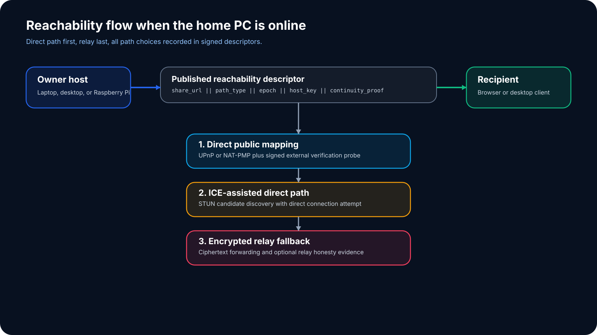

Layer 1
Content-addressed storage
Chunking, deduplication, deterministic manifests. Every file becomes a Merkle tree with a stable root hash that anchors the entire evidence chain.
SafeDrop separates concerns into explicit layers so each subsystem can be built, tested, and extended independently. The architecture keeps frontier research out of the critical MVP path.
From storage primitives at the bottom to user-facing explanation surfaces at the top.
Chunking, deduplication, deterministic manifests. Every file becomes a Merkle tree with a stable root hash that anchors the entire evidence chain.
Append-only audit log, signed segment receipts, delivery confirmations, and exportable evidence bundles. Useful before any ZK wrappers are added.
Link creation, capability tokens, expiry enforcement, resumable transfers, and revocation. Each state transition emits an audit event.
UPnP/NAT-PMP port mapping, signed external probes, ICE hole-punching, dynamic DNS binding, and encrypted relay fallback.
Metadata aliases, size bucketing, timestamp coarsening, consent tracking, and regulatory-compliant export bundles.
Human-readable evidence cards, admin dashboard, status explanations, and operator trust interface. Explain, never hide.
Each component communicates through defined interfaces. No layer reaches through another.
The reachability subsystem tries direct binding first and falls back through progressively more assisted methods.

The threat model covers network adversaries, storage compromise, relay trust, and metadata inference.
Every reachability path is signed and bound to the session. Man-in-the-middle attacks are detected through certificate pinning and signed probes.
Envelope encryption with per-object keys. Deletion uses crypto-shredding with attested key destruction events.
The relay sees only encrypted ciphertext and blinded session identifiers. No file contents or metadata are exposed to the relay operator.